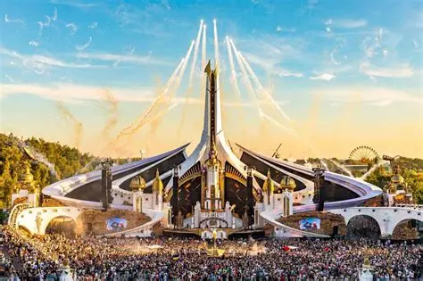
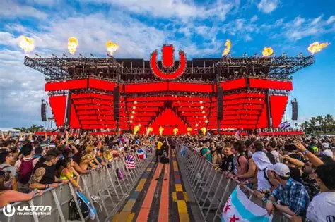
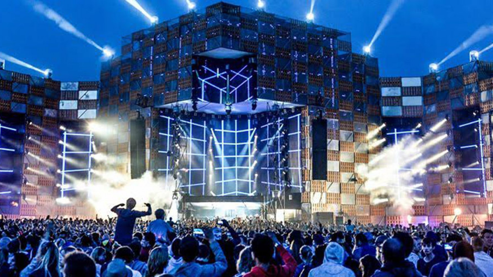
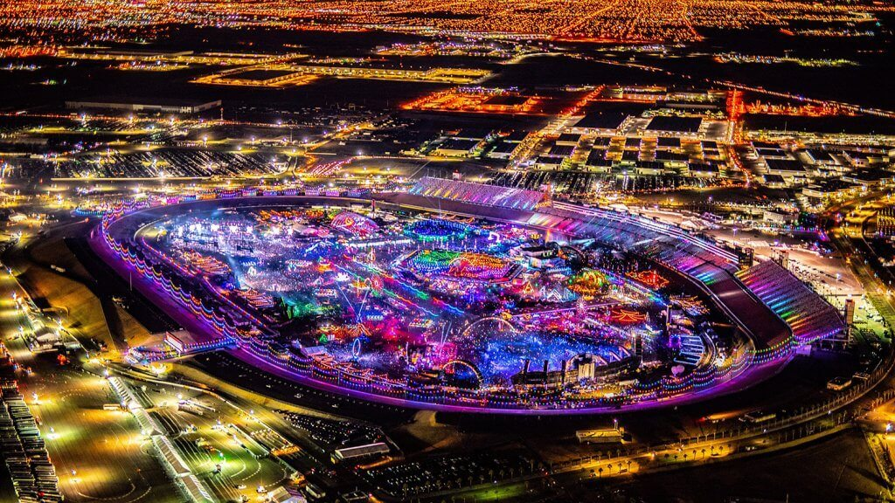
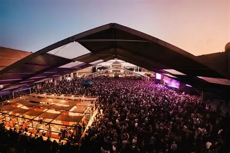
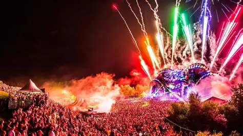

Festivales de Música Electrónica
Yo soy partidario de que la música une, me lo ha demostrado en reiteradas veces de mi vida. Tuve el placer de asistir a un festival donde interactuas y conoces gente de todo el mundo, es una experiencia muy agradable que super recomiendo.
Tomorrowland (Bélgica) |
 |
Ultra Music Festival (Miami, EE.UU.) |
 |
Awakenings Festival (Países Bajos) |
 |
Electric Daisy Carnival (Las Vegas, EE.UU.) |
 |
Sonar Festival (Barcelona, España) |
 |
Mysteryland (Países Bajos) |
 |